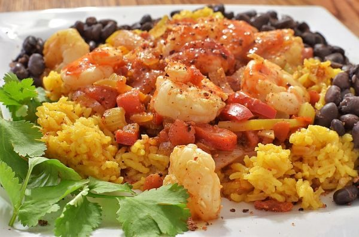

Shrimp Creole

Photo: jeffreyw (CC BY 2.0)
A Creole-style dish of shrimp simmered in a seasoned tomato sauce with onion, celery, peppers, and garlic, served over cooked rice.
Directions
- Cook onion, celery, green peppers and garlic in butter for 5 minutes. Stir in tomato sauce. Simmer for 10 minutes. Add water if needed, add shrimp. Heat to boiling, cover and simmer over medium heat 10-20 minutes or until shrimp are done. Serve over rice.
- Cook onion, celery, green peppers and garlic in butter for 5 minutes. Stir in tomato sauce. Simmer for 10 minutes. Add water if needed, add shrimp. Heat to boiling, cover and simmer over medium heat 10-20 minutes or until shrimp are done. Serve over rice.
Goes well with
https://lizotte.cool/recipe/shrimp-creole.html